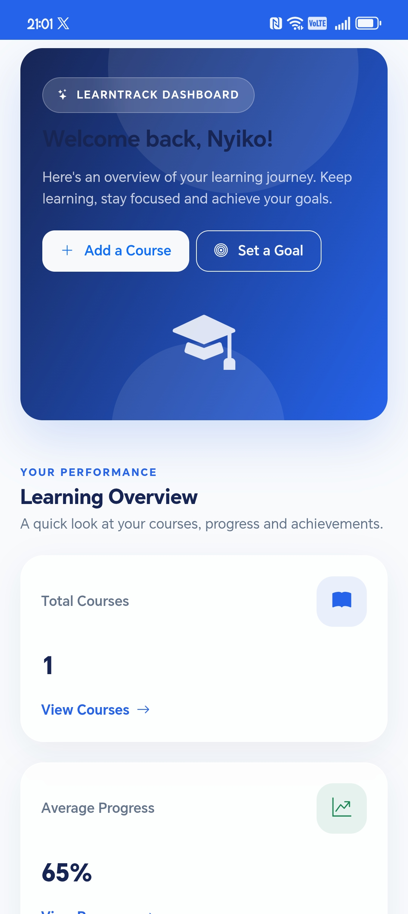
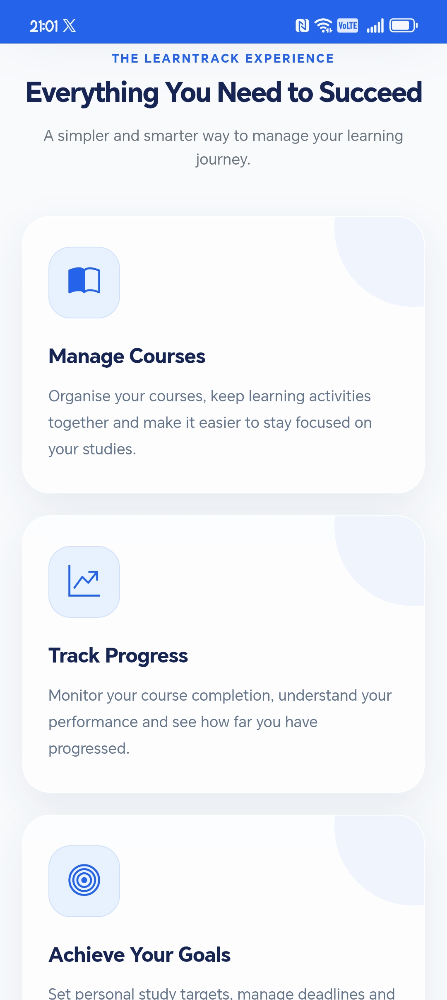
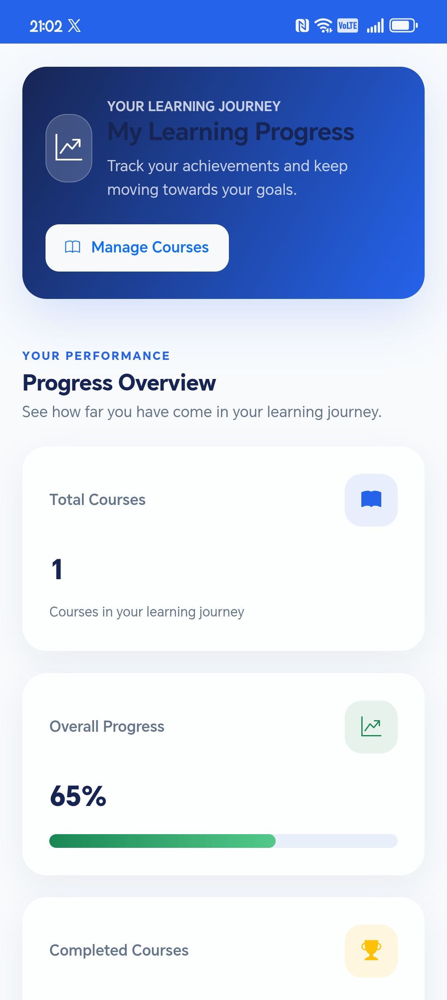

PROJECT CASE STUDY / 002
LearnTrack
Learning & Goal Tracking Web Application
A web application designed to help users organise their learning goals, manage their progress and stay focused through a structured digital platform. Built with ASP.NET Core MVC and MySQL, with Progressive Web App support for mobile installation.
Project Overview
Understanding the purpose, objectives and development of the LearnTrack application.
About the Project
LearnTrack is a learning and goal tracking web application developed to provide users with a structured way to manage their learning activities and personal goals.
The application was developed using ASP.NET Core MVC, C# and Entity Framework Core, with MySQL serving as the database. ASP.NET Core Identity provides user authentication and account management.
LearnTrack also includes Progressive Web App functionality, allowing users to install the application on supported devices and access its basic offline fallback page.
Project Name
LearnTrack
Project Type
Web Application
Development
Full-Stack Development
Developer
Hlulani Tyrone Mthombeni
Technologies
C#, ASP.NET Core MVC, MySQL, JavaScript
Project Status
Deployed & Available Online
Problem Statement
Managing learning activities and personal goals can become difficult without a centralised way to organise progress and maintain consistency. LearnTrack addresses this need by providing a digital platform where users can manage learning goals and organise their activities in one place.
Project Objectives
Goal Management
Provide users with tools to organise and manage their learning goals.
Learning Progress
Support users in keeping track of their learning activities.
User Authentication
Provide account registration and secure user authentication.
Mobile Accessibility
Make the application installable on supported mobile devices.
Technical Architecture
Technologies and components working together to power the LearnTrack application.
Frontend Development
HTML, CSS and JavaScript provide the application interface and interactive user experience.
Backend Development
ASP.NET Core MVC and C# handle application logic, routing and communication between components.
Database Management
MySQL stores application data, while Entity Framework Core supports database operations.
Authentication
ASP.NET Core Identity manages user accounts and authentication through the application.
Core Features
Key functionality developed to support learning organisation and goal management.
User Registration
User account registration and authentication using ASP.NET Core Identity.
Goal Management
Create and manage learning goals through the application.
Progress Tracking
Organise learning activities and keep track of personal progress.
Goal Reminders
Application reminder functionality to support learning consistency.
Installable PWA
Install LearnTrack on supported devices through Progressive Web App support.
Offline Fallback
A service worker provides a basic offline fallback page when the application cannot be reached.
Technology Stack
Development technologies and tools used to build and deploy LearnTrack.
C#
Backend programming and application logic.
ASP.NET Core MVC
Web application framework and architecture.
MySQL
Relational database management.
Entity Framework Core
Database access and object-relational mapping.
HTML & CSS
Application structure and visual styling.
JavaScript
Client-side interactions and PWA functionality.
Progressive Web App
Installable application support and service worker.
MonsterASP.NET
Web application hosting and deployment.
Development Process
The main stages involved in developing and deploying the LearnTrack application.
Application Structure
Established the ASP.NET Core MVC project structure, including models, controllers, services and views.
Database Integration
Configured Entity Framework Core and MySQL to manage application data and database migrations.
Authentication & Features
Integrated ASP.NET Core Identity and developed the application's learning and goal management functionality.
PWA Development
Added the web app manifest, application icons and service worker to support installation on mobile devices.
Deployment
Published the application to MonsterASP.NET, configured the production database and enabled HTTPS.
Project Screenshots
A visual demonstration of the LearnTrack application and its interface.

Application Homepage
Main LearnTrack interface.

User Dashboard
Learning and goal management interface.

Goal Management
Learning goal organisation.

Mobile Experience
LearnTrack installed on a mobile device.
Challenges & Solutions
Technical challenges encountered during development and deployment.
Database Configuration
Challenge
Configuring the application to work with a production MySQL database.
Solution
Configured the database connection and deployed the database structure to the hosting environment.
User Authentication
Challenge
Managing user accounts and authentication within the application.
Solution
Integrated ASP.NET Core Identity with Entity Framework Core.
Mobile Installation
Challenge
Making the web application installable on supported mobile devices.
Solution
Implemented a web app manifest, application icons and service worker.
Production Deployment
Challenge
Publishing the application and configuring it for a live hosting environment.
Solution
Published the application to MonsterASP.NET, configured production settings and enabled HTTPS.
Explore the Project
Experience the live application or explore the source code on GitHub.
Live Application
Visit the deployed LearnTrack application and explore its functionality.
View Live Project →GitHub Repository
Explore the source code, MVC architecture, database integration and PWA implementation.
View Source Code →Project Conclusion
LearnTrack represents my practical experience in developing and deploying a full-stack web application using ASP.NET Core MVC. Throughout this project, I worked with C#, Entity Framework Core and MySQL to build the application structure and manage data. I also integrated ASP.NET Core Identity for user authentication and implemented Progressive Web App functionality to support mobile installation. Deploying the application introduced me to production database configuration, web hosting and HTTPS setup. This project strengthened my understanding of backend development, database integration, application deployment and modern web technologies.
Learn. Organise. Track Your Progress.
Discover LearnTrack, a learning and goal tracking application built with ASP.NET Core MVC.